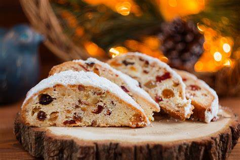

Stollen

Ingredients
Switch to Steps
-
6 oz Dried Mixed Fruit
-
2 tsp Rum
-
3 cups Strong Plain Flour
-
pinch of Salt
-
7 gr PAcket of Fast Action Dried Yeast
-
6 Tbsp Butter, melted
-
1/4 cup (150ml) Milk, warm
-
1 Egg
-
6 oz White Marzipan
-
1 Tbsp Butter, melted
-
Powdered Sugar
Steps
Switch to Ingredients
-
Tip the dried fruit into a small bowl and add the lemon rind and rum.
Stir the fruit, then cover the bowl.
Leave the fruit for at least 2 hrs or overnight.
-
To make the dough, tip the flour into a bowl and stir in the salt and yeast.
-
Lightly beat together the butter, milk and egg and add the flour mixture.
Mix together to form a soft dough.
-
Turn the dough onto a lightly floured surface and knead it for 8-10 minutes,
until the dough is smooth and elastic.
-
Make a dip in the center of the dough and pour in the fruit and any juices remaining in the bowl.
-
Knead the fruite into the dough.
-
Roll the dough out to about 10"x8".
-
Knead the marzipan to soften it and then roll it into a long sausage shape, just slightly shorter then the dough.
-
Place the marzipan on the dough and then fold the dough over it.
Bring the other side of the dough over into the center, to give it a slighly oval shape.
-
Place the stollen on a buttered baking sheet, and cover it with a light oiled piece of cling film.
-
Leave in a warm place until stollen has doubled in size.
-
Set the oven to 400F.
-
Bake the stollen, towards the top of the oven, for 20-30 minutes,
or until it sounds hollow when lifted off the baking sheet and tapped underneath.
-
Remove the stollen from the oven and slide onto a wire rack.
Immediately brush over the melted butter and heavily dredge it with powdered sugar.
-
Leave it to cool. The stollen will keep for up to 5-7 werks
if wrapped tighly in a foil and stored in a cool place.
Redust with powdered sugar before serving.